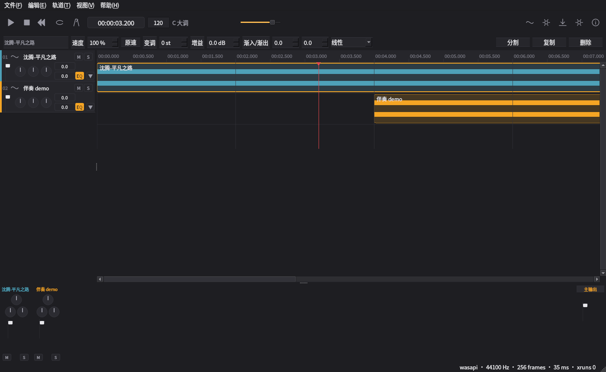
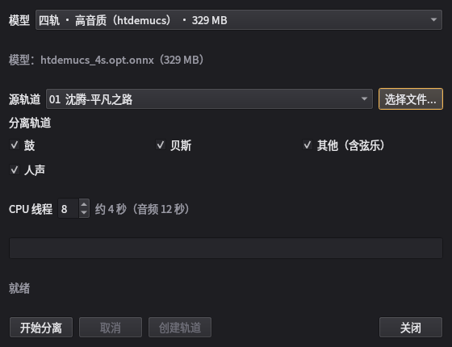
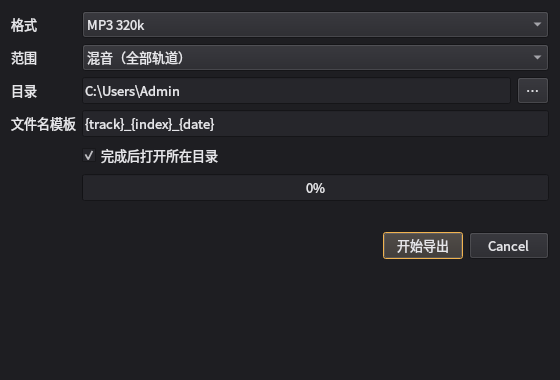

AudioBench 新手教程
照着做就行，全程大约 10 分钟。每一步都告诉你「点哪里」「会看到什么」「出问题怎么办」。
灰色小字是提醒，红色小字是容易踩的坑。
0. 先认识一下窗口
打开软件后，界面从上到下分成五块，你先不用记名字，知道大概位置就行：

| 位置 | 长什么样 | 用来做什么 |
|---|
| ① 最上面一条 | 有 ▶ ■ 按钮、时间数字、节拍器 | 播放、停止、循环、节拍器 |
| ② 第二行 | 「速度 / 变调 / 增益 / 渐入渐出」 | 选中一段音乐后，在这里改它的参数 |
| ③ 中间深色大块 | 横向的彩色长条 | 放音乐的地方（时间线） |
| ④ 深色块左边一列 | 歌名 + M / S + 圆钮 | 每条轨道的名字、静音、独奏、音量 |
| ⑤ 最下面 | 一排小推子 | 总音量（混音器），用菜单「视图」可以收起 |
1. 第一步：把歌放进来
怎么做
- 打开「我的电脑」，找到你的歌（
.mp3、.wav、.flac 都行）。
- 用鼠标按住它，拖到中间那块深色区域，松手。
- 也可以按
Ctrl+I，在弹出的窗口里选文件，点「打开」。
会看到什么
深色区域里多出一条彩色长条（叫「片段」），左边多出一栏写着歌名（叫「轨道」）。
长条里那些起伏的线条是波形，代表声音的强弱。
遇到问题
- 拖进去没反应：先确认文件后缀是上面几种。如果是
.ape、.dsf 这类，先用别的软件转成 mp3。
- 提示无法解码：文件可能坏了，先用播放器试试能不能正常播放。
- 等了几秒才有波形：正常。软件要先把整首歌「读一遍」画成图，长歌要等一会儿。
2. 第二步：播放和循环
怎么做
- 按 空格键：开始播放；再按一下：暂停。
- 按 Home 键：回到最开头。
- 想反复练某几句：按住 Shift，在顶部时间刻度上从左往右拖一小段，松手后会看到一条蓝色区域。
- 取消循环：在刻度尺上双击。
- 想要打拍子：点那根斜线按钮（节拍器）。
会看到什么
一条红色竖线（播放头）从左往右走，顶部的时间数字一直在变。蓝色区域内会反复播放。
遇到问题
- 没有声音：① 看轨道左边的 M 是否被点亮（点亮就是静音）；② 看右下角有没有
wasapi 字样；③ 检查系统音量。
- 循环没生效：确认蓝色区域真的画出来了，并且播放位置在蓝色区域里面。
3. 第三步：剪辑（剪短、挪动、淡入淡出）
怎么做
- 单击长条：选中它，边框变亮，上方第二行出现一排控件。
- 拖动长条中间：左右移动位置。
- 拖动长条左边缘或右边缘：把它剪短（或拉长）。
- 拖动长条上沿的两个小角：做淡入（开头渐响）和淡出（结尾渐弱）。
- 按 S：在播放头位置把片段切成两段。
- 按 Delete：删除选中的片段；按 Ctrl+D：复制一份。
- 改错了按 Ctrl+Z 撤销，按 Ctrl+Shift+Z 重做。
会看到什么
操作立刻生效：长条变短、位置改变、开头结尾出现斜坡。撤销会一步一步退回。
遇到问题
- 拖不动：先单击选中它。
- 剪到很短就停住：这是保护，片段不能短于 1 帧。
- 红色竖线跑到屏幕外：滚动条拖一下，或按 Home 回到开头。
4. 第四步：放慢、变调（扒带用）
怎么做
- 单击选中长条。
- 上方「速度」填
50~200：小于 100 是放慢，大于 100 是加快，音高不会变。
- 上方「变调」填
-12~12：数字是半音，速度不会变。升一个八度填 12。
- 点「原速」按钮可以一键回到 100%。
会看到什么
长条长度会跟着速度变化（放慢就变长），播放时声音立刻改变。
遇到问题
- 改了没反应：可能没选中片段，或者改的是另一条轨道。
- 变调后声音有点怪：正常，幅度越大越明显。±12 半音以内是可用范围。
5. 第五步：分离人声和伴奏

怎么做
- 先在左边点一下要分离的那条轨道（让它的名字变亮）。
- 点最上面一条最右边的人形按钮，会弹出「音轨分离」窗口。
- 最上面的「模型」选一个：
- 四轨 · 高音质：分成 人声 / 鼓 / 贝斯 / 其他，音质最好，推荐。
- 六轨 · 含吉他/钢琴：多分出吉他和钢琴两条，但整体音质会差一些。
- 下面勾选想要的分轨（默认全选）。
- 点「开始分离」。
- 等进度条走完，点「创建轨道」。
会看到什么
- 进度条下面会显示「第 3/33 块 · 预计剩余 40 秒 · 内存 700 MB」这样的信息。
- 完成后多出 4 条（或 6 条）新轨道，名字是「歌名 · 人声」这种格式。
- 原来那条会自动静音（左边的 M 亮起），这样你听到的才是分轨，不是叠在一起的声音。
遇到问题
- 太慢：3 分钟的歌大约 1 分钟，用的是你电脑的 CPU，和网速无关。
- 中途不想等：点「取消」，不会留下任何轨道，也不会占硬盘。
- 提示「没有一条 stem 轨道创建成功」：异常情况，请把
%APPDATA%\AudioBench\logs\AudioBench.log 发给我。
- 分离完听不出区别：检查原轨道的 M 是否亮着（应该已经自动静音）。
6. 第六步：导出成 mp3

怎么做
- 按
Ctrl+E，或点走带条最右边的向下箭头。
- 选格式：
- MP3 320k：最常用，体积小，音质够好。
- WAV：完全无损，体积很大（3 分钟约 30 MB）。
- FLAC：无损但会压缩，体积中等。
- 选范围：「全部轨道」把整个工程混成一个文件；「当前轨道」只导选中的那条。
- 点「…」选保存文件夹。
- 点「开始导出」，等进度条走完。
会看到什么
窗口里显示「完成：文件名（用时）」，并且自动弹出文件夹、选中那个文件。
遇到问题
- 看到 clipping detected：音量太大可能破音。把右上角「主输出」那条推子往下拉一点，再导一次。
- 导出没声音：检查轨道是不是被静音了、片段是不是在 0 秒之后还有内容。
- 想自己定文件名：在「文件名模板」里改，例如
{track}_{date}。
7. 第七步：保存，以及意外退出后怎么找回
- 按
Ctrl+S 保存工程（.abproj 文件）。下次双击这个文件就能打开。
- 软件每 30 秒会自动存一份草稿。如果它意外关掉了，下次打开会问你要不要恢复。
- 工程文件里记的是音乐文件的位置。如果你把歌挪走了，打开工程会提示「缺少文件」——
把歌挪回原来的文件夹就好。
8. 常见问题（FAQ）
| 现象 | 原因与解决办法 |
|---|
| 播放没声音 | 轨道 M 被点亮 / 系统音量 / 右下角设备不对 |
| 导入很慢 | 长歌要生成波形，等右下角提示；如果一直不动，检查磁盘空间 |
| 分离很慢 | 正常，取决于歌的长度和电脑性能；可用「CPU 线程」调大一点 |
| 分离后听不出人声 | 新轨道和原曲叠着放了，把原轨道的 M 点亮 |
| 导出的文件是空的 | 轨道静音 / 片段不在 0 秒之后 / 选错了范围 |
| 撤销没了 | 最多保留 200 步；关掉软件后撤销记录会清空 |
| 界面全英文 | 菜单「帮助 → 设置」里把语言改成中文 |
| 想重看这个教程 | 按 F1，或菜单「帮助 → 新手引导」 |
9. 术语小抄
| 看到的词 | 大白话 |
|---|
| 轨道（Track） | 一条横向的「车道」，一条轨道放一个声音 |
| 片段（Clip） | 车道上的彩色长条，就是一段声音 |
| 播放头 | 那条红色竖线，表示现在播到哪儿 |
| 推子（Fader） | 音量滑块，往上推声音更大 |
| 静音 M / 独奏 S | M 让这条轨道闭嘴；S 让别的轨道都闭嘴 |
| 增益（Gain） | 就是音量，用分贝（dB）表示，0 是不加不减 |
| 淡入 / 淡出 | 开头慢慢变响 / 结尾慢慢变轻 |
| 变调（Pitch） | 把歌升高或降低，单位是「半音」 |
| 分离（Stems） | 把一首歌拆成人声、鼓、贝斯等几条 |
| 削波（Clipping） | 声音太大超出上限，会「破音」 |
10. 快捷键
| 按键 | 作用 |
|---|
| 空格 | 播放 / 暂停 |
| Home | 回到开头 |
| Ctrl+I | 导入音频 |
| Ctrl+S / Ctrl+Shift+S | 保存 / 另存为 |
| Ctrl+Z / Ctrl+Shift+Z | 撤销 / 重做 |
| Ctrl+E | 导出 |
| Delete | 删除片段 |
| S | 在播放头处分割 |
| Ctrl+D | 复制片段 |
| Ctrl + 滚轮 | 放大 / 缩小时间线 |
| Ctrl+M | 显示 / 收起混音器 |
| Shift + 在刻度尺上拖 | 设置循环 |
| M | 在播放头加一个标记 |
| F1 | 打开帮助 |
看完还想再看一遍引导浮层？点下面的「重播新手引导」按钮，或按 F1 后点它。